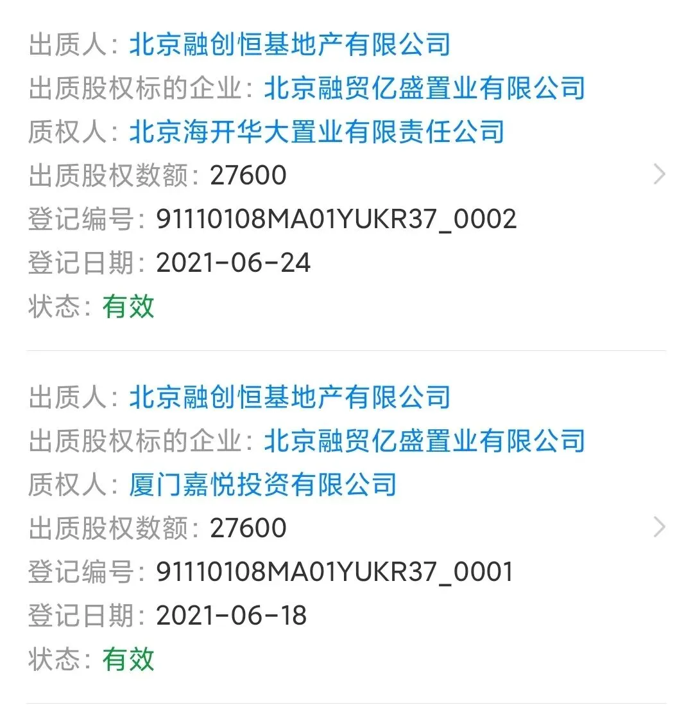
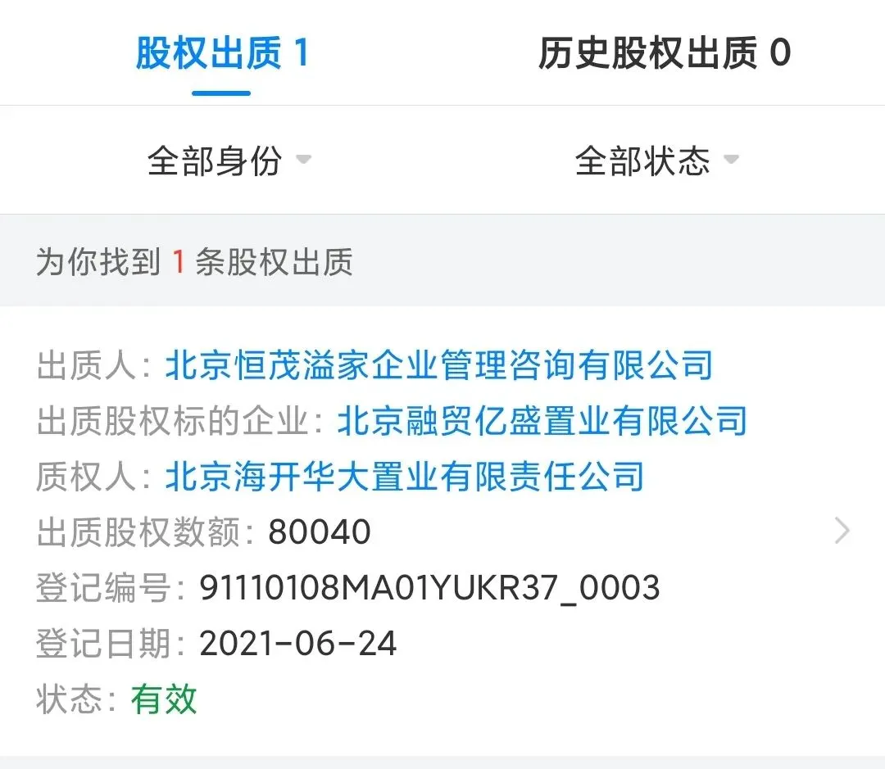

融创的钱究竟从哪来的
融创的钱，究竟从哪来的？
上篇文章发完不久就到了河南，所以一些答应大家的事也就耽搁了。
一是之前小密圈封闭后，相关读者手中星币的处理方案，这周五会统一处理，有需要的可以准备好资料；
二是融创文章的更新，这个推迟有两点原因：协助官媒整理庞大的资料数据、融创刚捐款等诸多原因，所以推迟至今日。
这几个月事多，更新减少，望大家海涵，争取8月恢复常态更新。
NO. 1｜壹
2014年后，房地产行业可谓大变革，资本时代的地产赛道，各种眼花缭乱的操作，赚足我等吃瓜群众的目光。
在这个时代，一家房企的好坏，全靠同行衬托。
高周转成为行业明面上最显著的特征之一。与高周转同为一体两面的，是房企出神入化的高超财技。
在去年的“三道红线”落地后，有位技艺高超的调表师，更显得难能可贵，典型如世茂，东施变西施；也有拙略如金科，“假绿档”明显得连外行人都骗不过。
房地产行业明面上的融资，这是每家大型房企都会涉足的领域。
恒大、碧桂园等这类周转型房企，加杠杆程度最猛，财务、合作与经营杠杆一般都会顶格加满，再不出现新的融资渠道和方式的情况下，整体杠杆提升空间很小，如今更是面临降杠杆的压力。
各大房企在明面上的融资可分为两大类：
一类是房企内部的融资造血，包括销售回款、现金、隐形的次级资金池（恒大金服、碧有信等）、其他速动资产。
另一类是外部的融资渠道，包括：项目开发贷、抵押贷、并购贷等银行贷款；配股、增发、私募股权资金等股权融资；公司债、企业债等债券融资；信托贷款等非标融资、海外发行股票、债券，海外银团贷款等海外资本融资；房地产资产的ABS融资；合作开发；民间借贷等。
以上这些融资环节中，大部分是较小问题，如虚报进度疯狂从银行撸开发贷、如销售回款。
在监管趋严后，赶工达到预售条件销售回款，催着财务让银行赶紧放款，比哪吒他娘怀孕三年而不产的心情还急切。
NO. 2｜贰
主要想说的是少部分融资环节，存在的较大操作空间，非行业的资深人士，很难窥其一隅。
研究一下已经被清退的P2P机构，会发现大部分的机构都有大量资金进入房地产领域。不少暴雷的房企中，以民间借贷的方式，签署抽屉协议，将资金输血给房企获取高额利息的民间标会、P2P并不在少数。
典型如此前已被清退的汇理财，与碧桂园的项目有千丝万缕的联系；如温州、平潭等地的民间标会，资金也有大量进入浙系、闽系房企。
在行情遇冷的2014年和房企资金吃紧的2018年，大量的民间标会跑路、大型P2P机构暴雷。
据官方公开信息和官媒的报道，量级在1-3亿元量级的非法资金进入房企，房企通常会采用和资金方控制的企业或个人签订合作合同，如签订虚假土方平整及填砂工程施工合同，双方约定好资金的免息（或低息）使用时间，通常是6-12个月。
到合同约定时间后，房企将资金以项目工程款的形式，打到资金方指定的公司账户或个人账户。
当然了，这也可以是园林绿植款，可以是劳务合同款，也可以是各类合作款...... 2021年 3月19日， 央行发布的 惩治洗钱犯罪典型案例中，就有这类典型操作。
而一个项目通常有数百万就能撬动，别小瞧了这部分资金。
海外 资本融资和合作开发，是操作空间最大的环节。
首先是海外资本融资，这部分资金的来源，由于某些原因查询不便，阻隔了很多吃瓜群众的探索。
一些白手套往往在这个环节做手脚，这个环节，往往离不开离岸信托这个工具。离岸信托是一个绝佳的工具。
在现有条件不变的情况下，保护顶层信托机构和底层信托资产不被击穿，离岸信托很稳妥。 如今房企的老板设有离岸信托也是个非常普遍的现象。
有意思的是，不少房企的二十大股东，常采用离岸信托持有境内企业，再以境内企业分散来持有房企的大额股份。
由于离岸信托的保密性，很难知晓最终受益人是谁。
NO. 3｜叁
项目合作开发 ，往往在合作方的二股东身上会有新发现。
从这些年的实践中总结一个规律： 不要轻易去研究二股东中的陌生人，否则经常会遇到些莫名其妙的事。
公元1009年，销售额十强中，有一家擅长做超级大盘的500强企业，创始人穷困下南洋，淘金后归来创业。
创业期间，遇到了他一生的贵人A君，二者一拍即合，创始人成了公司明面上站台的；而A君，是背后的实控人，公司沦为其钱袋子。
A君高升，创始人也率公司奔赴帝国首都，开发了多个大盘和超级商业综合体；在全国各地也开发了大量超级大盘，拿地价格非常非常便宜，近乎白菜价，有的地块，甚至在公开市场都没有信息。
A君在任期间，因为他的关系， 大量 免息 低息资金 进入这家企业，由创始人统筹，民间戏言：赵钱孙理。
资金雄厚到公司旗下的超级大盘的开发，几乎未使用开发贷等贷款，清一色“自有”资金，开发完成后，再低价倾销给购房者。
卖不动的商铺等，找来大量55-65岁的老人，将商铺登记在其名下，一次性”购买“，一些资金因此很干净。后续再将这类商铺更名出售。
后来A君卸任，宛如后人所写《红楼梦》中的贾府倾覆，创始人失去最大靠山，不仅在土地市场消失，还卷入西南地区的行贿案......内部消息称，其被罚款百亿元；并被革去一些职务和取消一些资格。
上青云、下阁楼，渐渐喧嚣归于沉寂。
NO. 4｜肆
唠磕完以上不相干的，再来看看吃瓜群众最感兴趣的：融创的资金来源。目前内部和外部两类融资几乎都有所涉。
比如内部是强抓销售回款，融创是强销型房企，每年的下半年业绩冲得贼猛，各大区域几乎都把销售回款考核放在第一位，每一分资金都被看得很重。
外部的，狠撸银行贷款、配股增发等股权融资.....这类信息，媒体没少报道，比如孙宏斌增发配资XX亿元、从平安马明哲手中融资等，在此不多重复。
而合作开发，都成了融创的一大法宝，融创在北京、广州、重庆等城市拿地后，通过出质项目股权，引入信托、国企等资金。
拿下北京海淀树村南地块的融创+国贸联合体：北京融贸亿盛置业有限公司。这家企业的股权显示，厦门恒悦管理咨询有限公司（厦门国贸）是大股东，融创是三股东。
三股东融创，分别将股权质押给了厦门嘉悦投资有限公司和北京海开华大置业有限公司，前者和后者的实控人，分别是厦门国贸和海淀区国资委。

第二大股东 ，是 一家 企业管理咨询 有限公司 ，股东是两位全新的陌生人 。 这家管理咨询公司，也将股权质押给了 海淀区国资委 背景的海开华大置业。

纵观融创大量项目的合作方，这类”企业管理咨询公司“非常普遍。这股能让国企央企都弯腰的魔力，神奇！
融创的资金从哪里来？套用孙宏斌说的：都是销售回款赚来的。这到底是融创的有钱，还是别人的有钱？
今年，我又看完了一遍《西游记》:
人有 时候得认命，是 大圣，还是 泼猴，全看 背景。 知道金翅大鹏背后有大哥， 就是没敢 说是谁。
按日期浏览全部来源（同日按条目标识排序）